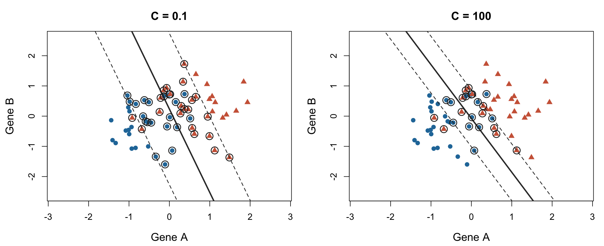
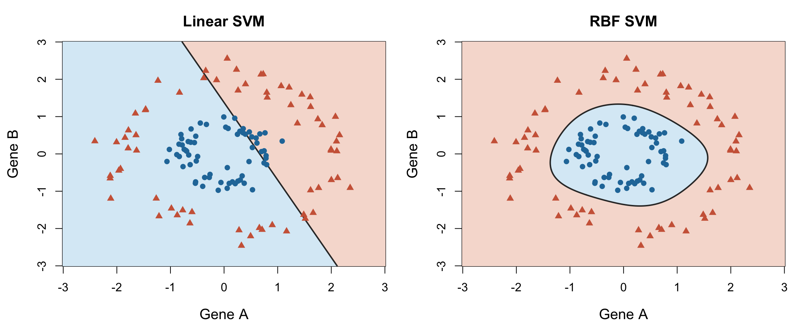

3 Support Vector Machines (SVM)
Machine Learning for Life Sciences
Support Vector Machines (SVM) are supervised learning algorithms used primarily for classification, although they can also be adapted for regression (Support Vector Regression, SVR).
Unlike KNN, which predicts the class of a new observation based on its nearest neighbors, SVM learns a decision boundary that separates observations belonging to different classes.
The central idea of SVM is to find a decision boundary that separates classes while maximizing the margin between them.
3.1 Linear SVM: Finding a decision boundary
Consider a dataset containing measurements of two genes, Gene A and Gene B, for patients belonging to two disease subtypes.
Each patient can be represented as a point in a two-dimensional feature space, with Gene A on the x-axis and Gene B on the y-axis.
If the two classes can be separated by a straight line, there may be several possible lines that correctly classify all training observations.
SVM aims to identify the line that provides the largest margin between the classes.
In two dimensions, the decision boundary is a line. With three features, it becomes a plane, and in higher-dimensional feature spaces, it is called a hyperplane.
The decision boundary of a linear SVM is defined by:
\[ \mathbf{w}^{T}\mathbf{x}+b=0 \] where:
- \(\mathbf{x}\) is the vector of input features.
- \(\mathbf{w}\) is the vector of learned feature weights, which determines the orientation of the decision boundary.
- \(b\) is the intercept, which determines its position.
A new observation is classified according to which side of the decision boundary it falls on:
\[ \hat{y} = \operatorname{sign}(\mathbf{w}^{T}\mathbf{x}+b) \]
for binary classes encoded as \(-1\) and \(+1\).
The model learns the values of \(\mathbf{w}\) and \(b\) from the training data.
3.2 Maximum margin and support vectors
The margin is the distance between the decision boundary and the nearest training observations from each class.
For linearly separable data, a hard-margin SVM selects the separating hyperplane that maximizes this margin.
Why maximize the margin?
A decision boundary passing very close to training observations may be sensitive to small changes in feature values. A larger margin provides a greater separation from nearby observations and can support better generalization to unseen data.
The observations that determine the position of the optimal decision boundary are called support vectors.
These are the training observations that lie closest to the decision boundary or, in a soft-margin SVM, on or inside the margin, including potential margin violations.
Support vectors are particularly important because they determine the fitted classifier. In contrast, many observations far from the boundary do not directly affect its position.
3.3 Soft-margin SVM: Allowing some classification errors
Real biological datasets are rarely perfectly separable.
Measurements may contain noise, biological variability, overlapping disease subtypes, or incorrectly labeled observations.
If the classes overlap, it may be impossible to find a straight line that separates all training observations correctly.
Soft-margin SVM addresses this problem by allowing some observations to fall inside the margin or even on the wrong side of the decision boundary.
This introduces a trade-off between:
- Maximizing the margin.
- Penalizing margin violations and classification errors.
The trade-off is controlled by the hyperparameter \(C\), commonly called the cost or regularization parameter.
- Small C: Stronger regularization. The model tolerates more margin violations in exchange for a wider margin.
- Large C: Weaker regularization. The model penalizes margin violations more strongly, potentially producing a narrower margin to better fit the training data.
A very large \(C\) may lead to a model that is overly sensitive to the training observations, while a very small \(C\) may produce an overly simple decision boundary.
The appropriate value of \(C\) depends on the dataset and is typically chosen using validation or cross-validation.

3.4 Nonlinear SVM: The kernel trick
So far, we have considered linear decision boundaries. However, relationships between molecular measurements and biological outcomes are often nonlinear.
For example, two disease subtypes might occupy different regions of a feature space but cannot be separated by a single straight line.
SVM can model nonlinear decision boundaries using kernel functions.
A kernel computes similarities between observations in a way that corresponds to working in a transformed feature space, without necessarily calculating the transformed features explicitly. This is known as the kernel trick.
A linear separating boundary in the transformed feature space can correspond to a nonlinear decision boundary in the original feature space.
Common kernels include:
- Linear kernel: Produces a linear decision boundary in the original feature space.
- Polynomial kernel: Allows polynomial relationships between features.
- Radial Basis Function (RBF) kernel: Allows flexible, nonlinear decision boundaries based on distances between observations.
The RBF kernel is a commonly used choice for nonlinear classification.
It is defined as:
\[ K(\mathbf{x}_i,\mathbf{x}_j) = \exp\left(-\gamma \|\mathbf{x}_i-\mathbf{x}_j\|^2\right) \]
where \(\gamma\) controls how quickly similarity decreases with distance.
- Small gamma: Similarity decreases slowly with distance, generally producing smoother decision boundaries.
- Large gamma: Similarity decreases rapidly, allowing more localized and potentially complex decision boundaries.
The flexibility of an RBF SVM depends on the interaction between \(\gamma\), \(C\), and the dataset.

3.5 Choosing SVM hyperparameters
As with KNN, SVM requires us to select hyperparameters that influence model behavior.
The most important choices include:
| Hyperparameter | Role |
|---|---|
| Kernel | Determines the type of decision boundary (e.g., linear or nonlinear). |
| C | Controls regularization and the penalty for margin violations. |
| Gamma | Controls how locally observations influence the decision boundary for the RBF kernel. |
The model parameters, such as the linear SVM weights and intercept, are learned during training. In contrast, hyperparameters are selected through a model selection procedure, typically using validation data or cross-validation.
We will return to hyperparameter selection later in the lecture.
3.6 Feature scaling in SVM
Like KNN, SVM is sensitive to differences in feature scales, particularly when using distance-based kernels such as RBF.
If one feature has a much larger numerical range than another, it may disproportionately influence the model.
Therefore, numerical features are commonly standardized before fitting SVM.
As with KNN, scaling must be estimated using only the relevant training data, and the same transformation is then applied to validation, test, and future observations.
3.7 Advantages and limitations of SVM
Advantages
- Can work well in high-dimensional feature spaces, such as gene expression or methylation datasets.
- Can model both linear and nonlinear decision boundaries.
- Regularization allows control over model complexity.
- Can generalize well when the kernel and hyperparameters are appropriately selected.
Limitations
- Requires careful selection of hyperparameters.
- Performance can be sensitive to feature scaling.
- Kernel SVMs can become computationally expensive for large datasets.
- Nonlinear SVMs are often less interpretable than simpler linear models.
- Performance may be affected by noisy features, class imbalance, and the choice of kernel.
3.8 KNN vs SVM
Although both KNN and SVM can be used for classification, they approach prediction differently.
| KNN | SVM | |
|---|---|---|
| Main idea | Predict from nearby observations | Learn a separating decision boundary |
| Learning approach | Instance-based | Optimization-based |
| Decision boundaries | Determined by local neighborhoods | Determined by the fitted margin-based classifier |
| Key hyperparameters | k, distance metric | C, kernel, gamma |
| Nonlinear classification | Naturally supported | Supported through kernels |
| Feature scaling | Important | Important |
Key takeaway
KNN makes predictions based on the nearest training observations, whereas SVM learns a decision boundary that aims to separate classes with a large margin.
Despite their differences, both algorithms involve choices that affect model flexibility and predictive performance.
This raises two important questions:
- How can we determine whether a model will perform well on new observations?
- How can we choose appropriate hyperparameters without overfitting the training data?
These questions lead directly to generalization, overfitting, model evaluation, and hyperparameter tuning.